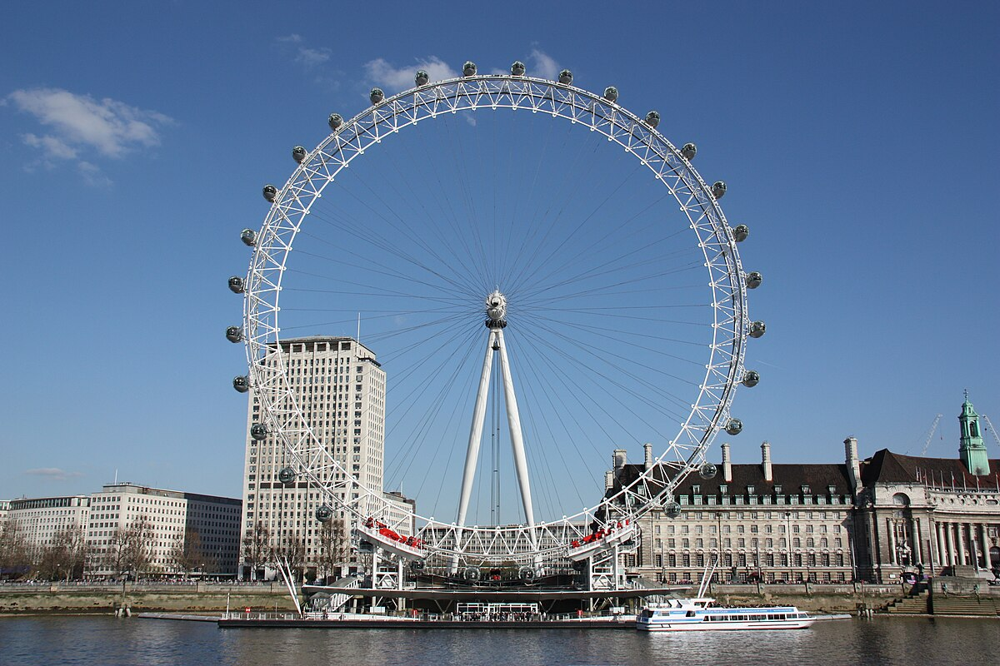
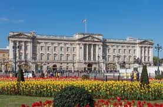
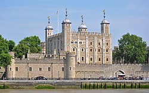
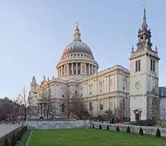

Carrusel de Imagenes

Lugares de interes
Si estas interesado/a en ir a Londre te recomendamos que visites estos sitio:
London Eye
El London Eye es una gran noria situada en el South Bank del río Támesis en Londres, Reino Unido. Es la noria más alta de Europa y la atracción turística más popular del Reino Unido con más de 3,75 millones de visitantes al año.
Palacio de Buckingham
El palacio de Buckingham (en inglés Buckingham Palace) es la residencia oficial del monarca británico en Londres.También se utiliza para ceremonias oficiales, visitas de Estado y visitas turísticas. Es famoso por albergar una parte sustancial de la Royal Collection, extraordinario conjunto de obras artísticas fruto del coleccionismo real. El palacio o la explanada frente a él se ha convertido en un punto de reunión de los británicos en tiempos de calamidad, de crisis o de festividad. «El Palacio de Buckingham» o, simplemente, «El Palacio», también es la metonimia utilizada para designar la fuente de comunicados de prensa provenientes de la familia real británica.
Torre de Londres
La Torre de Londres, oficialmente llamada Palacio Real y Fortaleza de su Majestad, es un castillo histórico situado en la ribera norte del río Támesis en el centro de Londres, Inglaterra. Se encuentra dentro del distrito londinense de Tower Hamlets, separado del límite norte de la ciudad por un espacio abierto conocido como Tower Hill. Se fundó hacia finales de 1066 como parte de la conquista normanda de Inglaterra. La Torre Blanca, que da nombre al castillo entero, fue construida por Guillermo el Conquistador en 1078, convirtiéndose en símbolo de la opresión en Londres por parte de la nueva élite gobernante. Desde 1100 al menos, el castillo fue usado como prisión, aunque no era este el propósito primario.
Catedral de San Pablo de Londres
La catedral de San Pablo (en inglés: Saint Paul's Cathedral) es la catedral anglicana de Londres, sede de la diócesis y del obispo de Londres, perteneciente a la denominada Iglesia de Inglaterra. Se encuentra en Ludgate Hill, el punto más alto de la ciudad.
